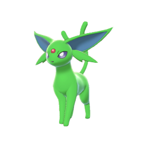

My Top 8 Favorite Pokemon |
|---|
| Rank |
Name |
Normal Form |
Shiny Form |
Type 1 |
Type 2 |
Pokedex Entry |
| 1 |
Espeon |
 |
 |
Psychic |
None |
It unleashes psychic power from the orb on its
forehead.When its power is exhausted, the orb
grows dull and dark. |
| 2 |
Squirtle |
 |
 |
Water |
None |
When it retracts its long neck into its shell, it
squirts out water with vigorous force. |
| 3 |
Sirfetch'd |
 |
 |
Fighting |
None |
After deflecting attacks with its hard leaf shield,
it strikes back with its sharp leek stalk. The leek
stalk is both weapon and food. |
| 4 |
Luxray |
 |
 |
Electric |
None |
Luxray can see through solid objects. It will instantly
spot prey trying to hide behind walls, even if the walls
are thick. |
| 5 |
Lucario |
 |
 |
Fighting |
Steel |
It controls waves known as auras, which are powerful
enough to pulverize huge rocks. It uses these waves to
take down its prey. |
| 6 |
Gallade |
 |
 |
Psychic |
Fighting |
True to its honorable-warrior image, it uses the blades
on its elbows only in defense of something or someone. |
| 7 |
Krookodile |
|
 |
Ground |
Dark |
This Pokémon is known as the Bully of the Sands.
Krookodile's mighty jaws can bite through heavy plates
of iron with almost no effort at all. |
| 8 |
Rowlet |
 |
|
Grass |
Flying |
During the day, it builds up energy via photosynthesis.
At night, it flies silently through the sky, on the prowl
for prey. |